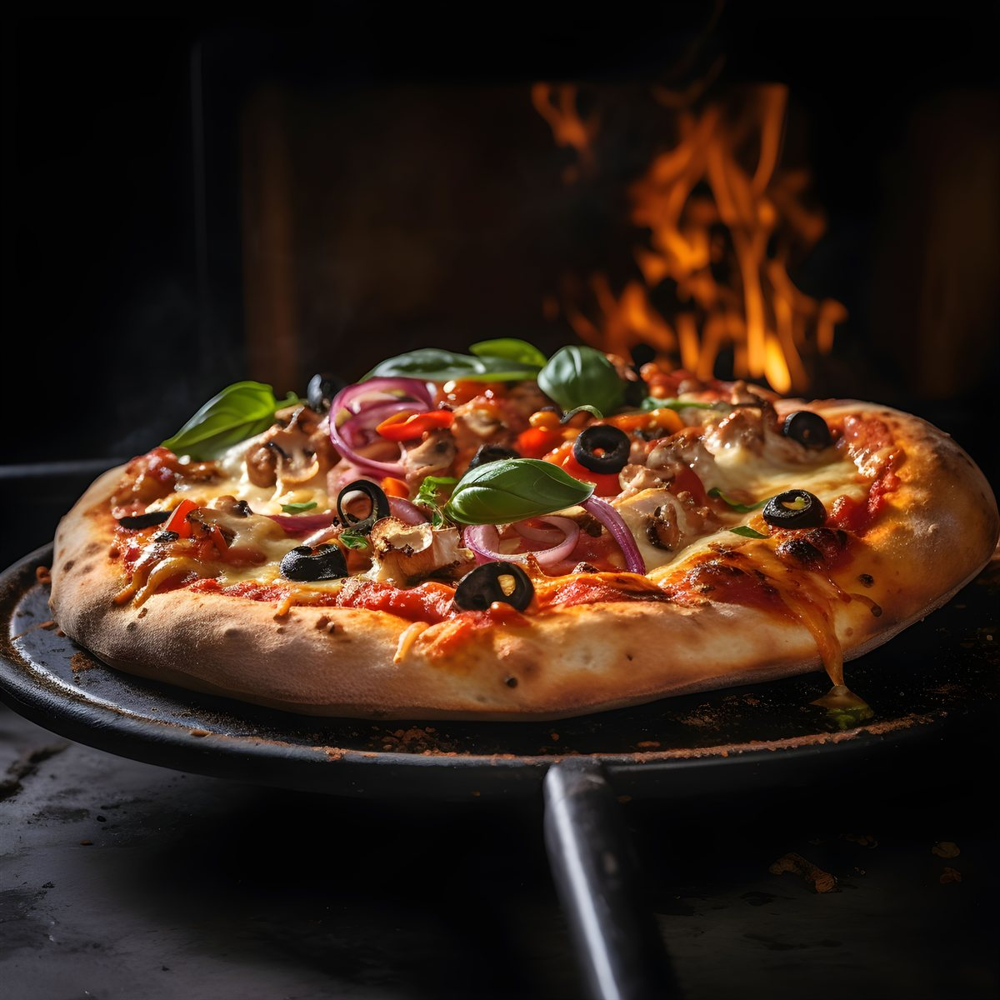

Pizza Napolitana
Neapolitan Pizza
Ingredientes / Ingredients
- 500 g de harina de fuerza de trigo
- 325 ml de agua tibia
- 1 cucharadita de sal fina
- 1 cucharadita de levadura de panadero
- 1 taza de salsa de tomate natural
- 200 g de queso mozzarella fresca
- Hojas de albahaca fresca recién recolectadas
- Aceite de oliva virgen extra
Preparación paso a paso / Step by Step
- Mezclar la harina, el agua, la sal y la levadura hasta formar una masa suave y elástica.
- Dejar reposar la masa tapada durante 1 hora hasta que doble su tamaño inicial.
- Estirar la masa con las manos desde el centro hacia los bordes en forma redonda.
- Añadir una capa uniforme de salsa de tomate y distribuir la mozzarella fresca troceada.
- Hornear a temperatura máxima (idealmente 250°C o más) durante 8 a 10 minutos.
- Terminar con hojas de albahaca fresca y un hilo de aceite de oliva antes de servir bien caliente.